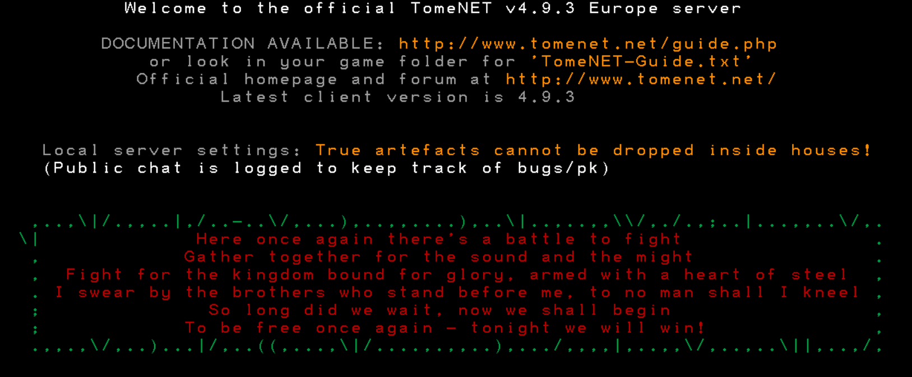

Целый экран до входа в игру. Текст и цвета задаёт сервер; клиент не выделяет ссылки, новости или настройки в отдельные блоки. Все 23 строки, включая пустые, сохраняются. Элементы управления ниже — только стенд.

Предложения: A — исходное начало координат с полем 24; B — центрирование с сохранением выбранного размера текста; C — максимальное равномерное заполнение с полем 24. A/B уменьшаются только при нехватке места. Во всех вариантах без wrap, scroll и перестановки строк. Поля 24 и выбор варианта пока не утверждены.
Данные синтетические: это сравнение геометрии, не декодер setup payload и не SDL raster reference. DPI здесь моделирует размер backing buffer; монитор и OS transitions не проверяются. Метрики задаются независимо от карты. Масштаб миниатюр браузером уменьшает сцену для сравнения; значения в отчёте относятся к выбранному логическому окну.